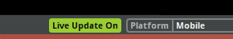
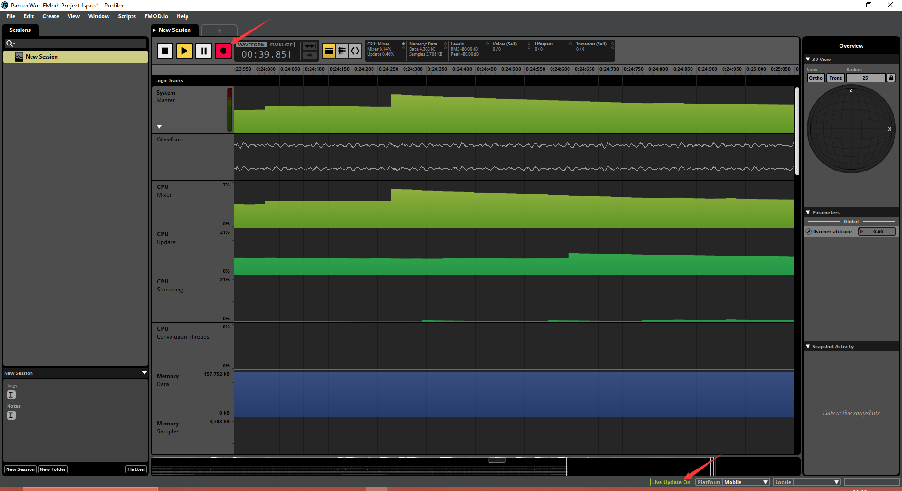

26.4. Fmod Profiler
Profiler 是 FMOD Studio 中的一个实用工具，可以实时查看 Unity 引擎中发生的音频事件、内存使用、CPU 使用等信息。要在 FMOD Studio 的 Profiler 中连接 Unity 引擎，请遵循以下步骤：
The Profiler is a utility in FMOD Studio that lets you watch the audio events, memory usage and CPU usage of the Unity engine in real time. To connect the Unity engine to the FMOD Studio Profiler, follow these steps.
打开 FMOD Studio：启动 FMOD Studio 并打开你的音频项目。
Open FMOD Studio: launch FMOD Studio and open your audio project.
打开 Profiler：在 FMOD Studio 的顶部菜单栏中，点击 "Window"，然后选择 "Profiler"。这将打开 Profiler 窗口。
Open the Profiler: in the top menu bar of FMOD Studio, click "Window" and then select "Profiler". This opens the Profiler window.
启动 Unity：确保 Unity 项目已打开，并在 Unity 中加载包含 FMOD 插件的场景。
Start Unity: make sure the Unity project is open and load the scene that contains the FMOD plugin.
设置连接：回到 Unity，点击顶部菜单栏中的 "FMOD"，然后选择 "Edit Settings"。在 Inspector 窗口中，展开 "Live Update" 部分，并勾选 "Enable Live Update"。确保 "Live Update Port" 与 FMOD Studio Profiler 中的端口设置相匹配（默认为 9264）。
Set up the connection: back in Unity, click "FMOD" in the top menu bar and select "Edit Settings". In the Inspector window, expand the "Live Update" section and tick "Enable Live Update". Make sure "Live Update Port" matches the port configured in the FMOD Studio Profiler (9264 by default).


激活实时更新：在 FMOD Studio 的 Profiler 窗口中，点击 "Live Update" 按钮，确保它已激活。激活后，按钮的背景颜色应为绿色。这将允许 FMOD Studio 与 Unity 引擎实时同步音频数据。
Activate live update: in the Profiler window of FMOD Studio, click the "Live Update" button and make sure it is active. Once active, the background of the button turns green. This lets FMOD Studio synchronize audio data with the Unity engine in real time.

连接 Profiler：现在，回到 FMOD Studio 的 Profiler 窗口。点击录制的圆形按钮
Connect the Profiler: now go back to the Profiler window of FMOD Studio and click the round record button.

开始调试：现在，可以开始在 Unity 中运行你的场景。在 FMOD Studio 的 Profiler 窗口中，你可以实时查看 Unity 引擎中的音频事件、内存使用、CPU 使用等信息，从而更好地分析和调试音量问题。
Start debugging: you can now run your scene in Unity. In the Profiler window of FMOD Studio you can watch the audio events, memory usage and CPU usage of the Unity engine in real time, which makes it easier to analyze and debug volume problems.
检查音效 Checking the Audio
在 FMOD Studio 的 Profiler 中，可以通过以下方法对比并诊断音量问题：
In the FMOD Studio Profiler you can compare and diagnose volume problems in the following ways.
检查事件的实时音量：在 Profiler 窗口的左侧栏中，可以查看正在播放的音频事件。选中其中一个事件，然后在右侧栏中可以看到该事件的实时音量数据。观察音量数据，检查是否有异常波动或值过低的情况。
Check the real-time volume of an event: the left panel of the Profiler window lists the audio events that are playing. Select one of them and the right panel shows its real-time volume data. Watch that data and check whether it fluctuates abnormally or is too low.
使用 Mixer 查看音量：在 FMOD Studio 的顶部菜单栏中，点击 "Window"，然后选择 "Mixer"。这将打开 Mixer 窗口。在 Mixer 中，你可以查看不同总线的音量以及它们之间的关系。请注意，如果 Profiler 中的 "Live Update" 已连接到 Unity，Mixer 也会显示实时音量数据。检查各个总线的音量，以确保它们没有低于预期的值。
Use the Mixer to inspect volume: in the top menu bar of FMOD Studio, click "Window" and select "Mixer" to open the Mixer window. There you can see the volume of the different buses and how they relate to each other. Note that when "Live Update" in the Profiler is connected to Unity, the Mixer also shows real-time volume data. Check the volume of each bus to make sure none of them is lower than expected.
监听音频：在 Profiler 的 "Live Update" 已连接到 Unity 时，你可以实时收听 Unity 中播放的音频。这样，你可以直接比较 FMOD Studio 和 Unity 中的音频效果，并判断音量是否存在问题。
Listen to the audio: while "Live Update" in the Profiler is connected to Unity, you can listen to the audio playing in Unity in real time. This lets you compare the result in FMOD Studio with the result in Unity directly and judge whether there is a volume problem.
记录并分析：在 Profiler 窗口中，你可以点击 "Record" 按钮开始录制音频性能数据。录制完成后，你可以详细分析音量、CPU 使用、内存使用等数据，找出可能的问题所在。
Record and analyze: in the Profiler window you can click the "Record" button to start recording audio performance data. When the recording is finished you can analyze volume, CPU usage and memory usage in detail to find where the problem may be.
对比预期效果：如果你有音频效果的预期结果（例如，之前的录音或参考音频），你可以将实时播放的音频与预期结果进行对比。这有助于判断音量是否有问题。
Compare against the expected result: if you have an expected result for the audio (for example an earlier recording or a reference track), you can compare the audio playing in real time against it. This helps you judge whether the volume is wrong.
通过这些方法，你可以在 FMOD Studio 的 Profiler 中对比并诊断音量问题。请注意，音量问题可能源于 FMOD 项目设置、音频文件的初始音量、Unity 中的音量设置等多种原因。在诊断问题时，请全面检查各个方面的设置。
With these methods you can compare and diagnose volume problems in the FMOD Studio Profiler. Keep in mind that a volume problem can come from many places: the FMOD project settings, the initial volume of the audio file, the volume settings in Unity, and so on. When diagnosing, check the settings on every side.